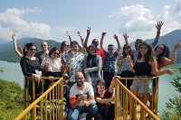
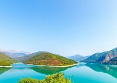
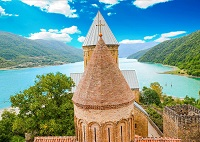
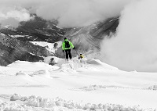
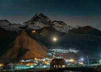
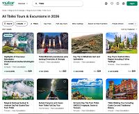
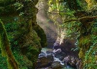

Mode, Stil und Geschichte
🔹Meine Herren, ich habe einen Vorschlag.  Lasst uns auf eine Gruppenreise entlang der Georgischen Heerstraße fahren. Nicht für diejenigen, die Liegestühle am Pool lieben, sondern für diejenigen, die verstehen:
Schinwali. Wasser. Viel Wasser. Schön. Fotos. Weiter geht's.  Ananuri. Festung. Steine. Wind. Das Gefühl, im 12. Jahrhundert zu sein, aber mit einem iPhone. Der Guide erzählt, wie man hier lebte, und Sie werden denken: „Gar nicht so schlecht gelebt."  Gudauri. Berge. Ski (wenn Saison). Schaschlik (immer). Höhe 2196 m. Ihr „Ich" kann sich auf dieser Höhe unangemessen verhalten (das ist normal).  Kasbegi. Finale. Kirche Zminda Sameba. Kasbek. Wenn Sie Glück haben, sehen Sie den Gipfel. Wenn nicht, sehen Sie eine Wolke, die fast Kasbek ist. 
Besonderheiten der Tour: — Ein Fahrer, der Serpentinen fährt, als wäre er mit einem Lenkrad in der Hand geboren. Ihnen kann übel werden. Das gehört zur Authentizität. — Ein Guide, der über Schinwali, Ananuri und Gudauri erzählt, aber Sie werden trotzdem vergessen, was was ist. Das ist normal. — Die Gruppe. Sie werden lachen, diskutieren, fotografieren und vielleicht gemeinsam Tschatscha am Straßenrand trinken. Das ist der Kaukasus.
Was mitnehmen: — Warme Kleidung (die Berge fragen nicht nach Ihrer Wettervorhersage). — Gute Laune (den Rest kaufen Sie vor Ort). — Einen Magen, der auf Chinkali vorbereitet ist (er wird nicht bereit sein, aber Sie schaffen es).
P.S. Wenn Sie nach der Tour „Gudauri" nicht aussprechen können, haben Sie alles richtig gemacht. |
🔹Tour zu den wichtigsten Sehenswürdigkeiten des Kaukasus. Begeben Sie sich auf eine sichere Reise durch den Kaukasus mit einem Guide — Sie müssen nicht selbst über schwierige Bergstraßen fahren. Unterwegs in die Berge sind mehrere Stopps vorgesehen, darunter der Schinwali-Stausee und der Architekturkomplex der Festung Ananuri. Auf der Aussichtsplattform in Gudauri können Sie einen Paragleitflug unternehmen (gegen Aufpreis). Sie können die Architektur der Dreifaltigkeitskirche in Gergeti (14. Jahrhundert) bewundern. Die ideale Wahl für Kulturliebhaber und Naturfreunde. Sie können nach Tiflis zurückkehren oder in Kasbegi bleiben. Eine bequeme Möglichkeit, an nur einem Tag viel Neues zu sehen und zu erfahren. Das ist eine vorteilhafte Gruppenreise. Das abwechslungsreiche Programm umfasst Kultur, Geschichte und Naturschönheiten. Mehr über die Tour „Die Hauptsehenswürdigkeiten des Kaukasus: Schinwali, Ananuri, Gudauri, Kasbegi (Gruppenreise)" - |
🔹Urlaub, ohne unnötige Sorgen - Viator
Endlich kommt die Urlaubszeit, und jeder steht vor der Frage: was, wo, wann und vor allem für wie viel. Ja, Urlaub ist nicht nur Vergnügen, sondern auch die Notwendigkeit, alles zu planen, nichts zu vergessen und sich vor allem nicht täuschen zu lassen. Und dabei helfen uns Reiseveranstalter, die den Löwenanteil der ganzen Arbeit für die Organisation Ihrer Erholung übernehmen. |
🔹Warum Viator besser ist als vergleichbare Anbieter  Ein Maßstab, der spürbar ist. Viator ist nicht nur eine Website, sondern ein riesiges Ökosystem. Ihre Angebote sind in Priceline, Booking, Expedia, Uber und sogar in Google Gemini integriert. Das bedeutet, dass Sie Ihren Urlaub an einem Ort planen und Erlebnisse über Viator buchen können, ohne wie ein verängstigter Tourist am Flughafen Istanbul zwischen zehn Tabs hin- und herzuspringen. „Jetzt buchen — später bezahlen". Diese Funktion ist eine Rettung für diejenigen, die ihren Urlaub ein Jahr im Voraus planen, aber kein Geld auf einem Depot einfrieren wollen. Viator bestätigt die Buchung ohne Vorauszahlung (nur ein symbolischer Dollar zur Kartenprüfung), und die vollständige Zahlung wird 2–9 Tage vor Beginn abgebucht. Wenn sich die Pläne ändern — kostenlose Stornierung. |
🔹Freunde, ich habe eine Idee für einen Tag!
Wenn du die Martwili-Schluchten und die Prometheus-Höhle nicht gesehen hast. Los geht's! Fahren wir schnell nach Kutaissi — Schluchten und Höhlen anschauen, die den Atem rauben (und ein wenig die Beine von den Treppen ermüden).
Route: Der Weg von Tiflis nach Kutaissi ist keine „Straße", sondern ein Degustationsmenü Georgiens an einem Tag: ein Schluck Geschichte in Mzcheta, ein Löffel Drama in Gori, eine Prise Mystik in Ubisa, eine Portion Grün auf dem Pass und ein vollwertiger zweiter Gang in Kutaissi. Sie kommen nicht „müde von der Straße" an, sondern „überladen mit Eindrücken". Und das ist die beste Art von Müdigkeit.
Martwili-Schlucht. Türkisfarbenes Wasser, Boot, Felsen. Sie werden verstehen, warum die Georgier so stolz auf ihre Natur sind. Und warum der Guide sagt: „Schauen Sie, aber lehnen Sie sich nicht zu weit vor". 
Prometheus-Höhle. Eine Unterwelt mit Beleuchtung, bei der man vor Begeisterung weinen möchte. Oder weil Sie die Jacke vergessen haben. In der Höhle sind es +14, also ja, nehmen Sie die Jacke mit.
Kutaissi. Finale. Bagrati-Kathedrale, Altstadt, Chatschapuri. Sie werden müde sein, aber glücklich. Oder einfach nur müde. Aber mit Fotos.
Besonderheiten der Tour:
Was mitnehmen:
P.S. Wenn Sie nach der Tour „Martwili" nicht aussprechen können, haben Sie alles richtig gemacht. Wenn doch — dann sind Sie noch nicht müde. Aber das hält nicht lange an. |
🔹 Tagesausflug von Tiflis: Schluchten und Höhlen von Kutaissi Fügen Sie Ihrem Urlaub ein Stück Natur hinzu und begeben Sie sich auf eine Tour zu den einzigartigen Felsformationen Westgeorgiens. Nach dem Transfer von Tiflis erwartet Sie eine Bootsfahrt durch die Martwili-Schlucht, wo Sie klares Wasser und Naturlandschaften bewundern können. Dann geht es zum nächsten Ziel — der Prometheus-Höhle. Hier können Sie versteinerte Wasserfälle und unterirdische Seen erkunden. Ein idealer Ort für Naturliebhaber und für diejenigen, die sich vom städtischen Trubel erholen möchten. Mehr über die Tour „Tagesausflug von Tiflis: Schluchten und Höhlen von Kutaissi (Gruppenreise)" - |
Change page language: |